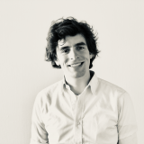

JASEIN 2024
January 25th-26th, 2024
Zeist, The Netherlands
Zeist, The Netherlands
| Home | Registration | Program | Directions | Flyer |
Welcome to the inaugural edition of JASEIN (Junior Academics in Strategy Entrepreneurship and Innovation in the Netherlands), which will be an exciting event for young scholars in the field of strategy, innovation, and entrepreneurship, who are based in The Netherlands. Our primary goal is to cultivate a vibrant academic network and foster valuable connections among early-career researchers. Beyond the exchange of ideas, this conference also embraces a social dimension, providing opportunities for informal interactions and shared experiences that enrich both our academic pursuits and personal connections. Join us on January 25th 2023, for a full day of knowledge-sharing and relationship-building.
JASEIN is organized by representatives from the University of Amsterdam, Tilburg University, Vrije Universiteit of Amsterdam, and Erasmus University.
|  |

|

|
This event is sponsored by the Amsterdam Business School of the University of Amsterdam.

|